광학기사 (2019-04-27 기출문제)
1과목: 기하광학 및 광학기기
1. 공기 중에서 초점거리가 5cm, 얇은 렌즈 2개를 서로 밀착시켰을 경우, 이 렌즈계의 초점거리는?
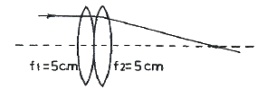
- 2.5cm
- 5.0cm
- 7.5cm
- 10.0cm
(정답률: 60%)

2. 한 물체가 곡률반경이 –6cm인 오목거울로부터 앞쪽으로 12cm가 되는 지점에 있을 때 거울에서 상까지의 거리는? (단, 거리는 모두 양(+)의 값을 가진다.)
- 2cm
- 3cm
- 4cm
- 5cm
(정답률: 75%)
3. 그림과 같이 off-axis ray의 입사높이와 시야각에 따라 상평면상에 빛이 모이는 점이 변화하는 수차와 거리가 먼 것은?
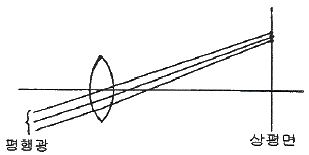
- 구면수차
- 코마
- 왜곡수차
- 비점수차
(정답률: 54%)
4. 렌즈의 버전스(vergence)에 관한 다음 설명 중 옳은 것은?
- 렌즈의 버전스는 빛을 모으거나 퍼지게 하는 능력을 말한다.
- 볼록렌즈는 음(-)의 버전스를 갖는다.
- 평행광은 무한대의 버전스를 갖는다.
- 볼록렌즈를 통과한 파면의 곡률 반경이 작을수록 버전스가 작다.
(정답률: 84%)
5. 두께 1cm인 평행판 유리에 법선으로부터 0.1rad의 각도로 입사한 광이 유리를 통과할 때 출사광은 입사광의 연장선으로부터 얼마만큼 변위되는가? (단, 유리의 굴절률은 1.5 이다.)
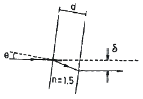
- 0.15mm
- 0.33mm
- 0.67mm
- 1.50mm
(정답률: 54%)
6. 다음 중 주경이 오목거울, 부경이 볼록거울로 구성된 망원경은?
- 뉴턴 망원경
- 공심형 망원경
- 그레고리형 망원경
- 카세그레인형 망원경
(정답률: 80%)
7. 다음 그림에서 똑같은 렌즈 앞뒤를 바꾸어서 같은 광성은 입사시킬 경우 구면수차에 대한 설명으로 옳은 것은?
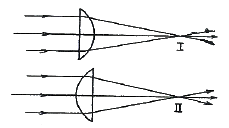
- Ⅰ과 Ⅱ의 구면수차는 차이가 없다.
- Ⅰ의 구면수차가 Ⅱ의 것에 비해 작다.
- Ⅰ의 구면수차가 Ⅱ의 것에 비해 크다.
- Ⅰ은 positive 구면수차이고, Ⅱ는 negative 구면수차이다.
(정답률: 58%)
8. 다음 중 상을 상하좌우 반전시키는 프리즘이 아닌 것은?
- 슈미트(Schmidt) 프리즘
- 아미찌(Amici) 프리즘
- 펜타(Penta) 프리즘
- 이중 포로(double Porro) 프리즘
(정답률: 59%)
9. 빛을 평면거울에 입사시킬 때, 평면거울을 10도 회전시키면 반사광은 얼마나 회전하겠는가?
- 0도
- 5도
- 10도
- 20도
(정답률: 59%)
10. 꼭지각이 30°인 프리즘의 굴절률이 파란색 광선에 대해서는 1.65이고, 빨간색 광선에 대해서는 1.61이라면 두 파장 범위 내에서 각분산(angular dispersion)은?
- 1.31°
- 2.62°
- 3.38°
- 4.18°
(정답률: 52%)
11. 어떤 오목거울의 앞 60cm의 위치에 물체를 놓았더니 물체 크기가 5배가 되는 실상이 생겼따면, 이 오목거울의 초점거리는 얼마인가?
- 30cm
- 40cm
- 50cm
- 60cm
(정답률: 52%)
12. 다음 그림은 빛이 공기 중에서 굴절률이 다른 두 물질 속을 지나는 경로이다. 공기, 물질 Ⅰ, 물질 Ⅱ에서 빛의 속력을 c, c1, c2 라 할 때 다음 중 관계가 옳은 것은?
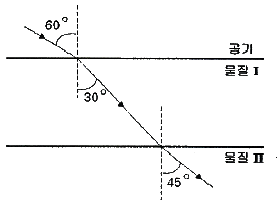
- c ＞ c2 ＞ c1
- c ＜ c2 ＜ c1
- c ＜ c1 ＜ c2
- c ＞ c1 ＞ c2
(정답률: 40%)
13. 각각 +10D의 굴절능을 가진 두 개의 얇은 렌즈가 4cm 만큼 떨어져 있다. 만일 두 번째 렌즈로부터 초점까지의 거리가 3cm 라면 광학계의 제2주요면은 두 번째 렌즈로부터 얼마나 멀리 떨어져 있는가?
- 3.25cm
- 3.55cm
- 4.35cm
- 4.65cm
(정답률: 41%)
14. 경통길이(tube length)가 160mm인 현미경에서 초점거리가 20mm인 대물렌즈의 배율은 얼마인가?
- 4
- 8
- 20
- 40
(정답률: 60%)
15. 초점거리가 10cm인 볼록렌즈의 좌측전방 5cm 인 곳에 물체가 놓여 있다. 상의 위치와 종류 중 옳은 것은?
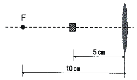
- 렌즈의 좌측 10cm 인 곳에 정립허상이 생긴다.
- 렌즈의 우측 10cm 인 곳에 도립허상이 생긴다.
- 렌즈의 좌측 3.3cm 인 곳에 정립허상이 생긴다.
- 렌즈의 우측 3.3cm 인 곳에 도립허상이 생긴다.
(정답률: 40%)
16. 얇은 렌즈에의해 그림과 같이 결상될 때 물체로부터 제1초점까지의 거리가 z, 제1초점거리가 f, 제2초점거리가 f′ 그리고 제2초점으로부터 상까지의 거리가 z′ 일 때 Newton의 방정식은?
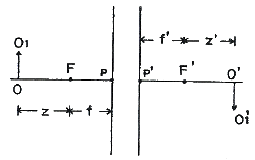
- zf = z′ f′
- zf′ = z′ f
- (z + f)f = (z′ + f′)f′
- zz′ = ff′
(정답률: 62%)
17. 그림과 같이 원래의 상이 찌그러진 상으로 나타나는 이유는 어떤 현상 때문인가?
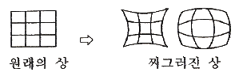
- 코마
- 구면수차
- 왜곡수차
- 비점수차
(정답률: 54%)
18. 공기 중에서 점광원의 빛을 구면수차 없이 한 점에 결상시키려면 경계면 반사경의 모양을 어떤 형태로 해야 하는가?
- 구면
- 포물면
- 타원체면
- 쌍곡면
(정답률: 52%)
19. 공기 중에서 파장이 600nm인 빛이 굴절률 1.5인 매질 내로 입사하였을 때 매질 내에서의 파장(λ)과 진동수(f)의 값은?
- λ = 400nm, f = 5×1014 Hz
- λ = 400nm, f = 7.5×1014 Hz
- λ = 900nm, f = 5×1014 Hz
- λ = 900nm, f = 7.5×1014 Hz
(정답률: 42%)
20. 투명한 물체의 굴절률을 실험적으로 측정하기 위해서 그 물체를 삼각형의 얇은 프리즘 모양으로 만들어서 이용하며 프리즘을 통과한 단색의 광선이 최소편의가 일어나는 상태가 되도록 조절한다. 이때 프리즘의 굴절률을 구하기 위해서 측정해야 할 것은?
- 입사각, 정각
- 최소편의각, 정각
- 입사각, 굴절각
- 최소편의각, 입사각
(정답률: 54%)
2과목: 파동광학
21. Na의 이중선(λ1 = 5895.9 Å, λ2 = 5890.0 Å)을 삼차 회절광에서 분리시키기 위해서는 격자 위에서 빛이 비추는 영역 안의 총 격자선이 몇 줄이어야 되는가?
- 333
- 500
- 999
- 1964
(정답률: 48%)
22. 얇은 렌즈의 곡률반경이 R이고, 이 렌즈와 평판사이의 굴절률이 n인 뉴톤링 실험장치가 있다. 반사광에 의한 뉴톤링 무늬에서 첫 번째 어두운 무늬의 반경은 얼마인가? (단, 사용된 파장은 λ 이다.)
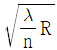
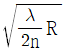
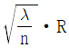
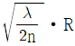
(정답률: 62%)
23. 굴절률 1.5인 유리 표면에서의 반사를 방지하기 위하여 굴절률 1.38인 MgF2 으로 무반사 코팅을 하고자 한다. 550nm 파장의 광에 대한 반사가 최소이기 위한 박막의 최소 두께는 약 얼마인가?
- 917Å
- 996Å
- 1833Å
- 1993Å
(정답률: 47%)
24. 지구에서 30억(3×109)km 떨어진 어떤 별이 중심파장이 500nm인 빛을 방출하고 있다. 망원경 앞에 이중슬릿을 놓고 간섭무늬가 없어질 때까지 슬릿사이 간격을 조절하여 횡코헤런스폭(transverse coherence width)이 6mm임을 알았을 때, 이별의 지름은 약 얼마인가?
- 4.5×107 km
- 1.5×106 km
- 6.1×105 km
- 3.1×105 km
(정답률: 40%)
25. 다음 함수들 중 Fourier transform 하여도 형태가 변하지 않는 것은?
- Gauss 함수
- δ함수
- Rectangular 함수
- Circular 함수
(정답률: 49%)
26. 다음 중 윤대판(zone plate)에 대한 설명으로 옳지 않은 것은?
- 윤대판은 볼록렌즈의 역할을 할 수 있다.
- 윤대판은 빛의 프레넬 회절현상을 응용한 장치이다.
- 평면파와 구면파의 간섭으로 윤대판을 만들 수 있다.
- 윤대판의 연이은 동심원 사이의 간격은 입사되는 빛의 파장과 무관하다.
(정답률: 52%)
27. 홀로그래피 방법으로 회절격자를 만들려고 할 때, 광원의 파장이 0.6μm 라면 격자 간격의 최솟값은 얼마인가?
- 0.3μm
- 0.6μm
- 0.9μm
- 1.2μm
(정답률: 24%)
28. 다음 중 파장과 색깔이 잘못 연결된 것은?
- 480nm – 파란빛
- 650nm - 주황빛
- 550nm - 초록빛
- 590nm – 노란빛
(정답률: 46%)
29. Michelson 간섭계의 두 거울 중 한쪽 거울을 0.200mm 움직이는 동안에 이동되는 줄무늬를 800개 헤아렸다고 하면 빛의 파장은 얼마인가?
- 500nm
- 400nm
- 300nm
- 200nm
(정답률: 40%)
30. 영(Young)의 이중 슬릿 실험에서 얻어지는 간섭무늬의 간격은 슬릿 간격과 슬릿 스크린 사이의 거리, 그리고 사용하는 빛의 파장에 의해서 결정된다. 다음 중 간섭무늬의 간격을 줄일 수 있는 경우는?
- 슬릿 간격을 넓힌다.
- 슬릿과 스크린 사이의 거리를 넓힌다.
- 파자이 큰 빛을 사용한다.
- 간격을 줄일 수 없다.
(정답률: 47%)
31. 빛의 편광 방향이 편광기의 투과 방향으로부터 30° 회전되었을 때 빛의 투과율은 얼마인가?
- 12%
- 25%
- 50%
- 75%
(정답률: 39%)
32. 파장이 600nm 인 빛이 1.2cm의 직경을 가진 초점거리 50cm인 볼록렌즈에 수직으로 입사되었을 때, Airy 디스크의 지름은 얼마인가?
- 6.1×10-6m
- 3.⑤×10-5m
- 1.22×10-4m
- 6.99×10-3m
(정답률: 35%)
33. 점광원이 만들어 내는 파면의 모양은?
- 평면
- 원통면
- 구면
- 타원체면
(정답률: 49%)
34. 위상변조를 이용하여 투명한 물체를 보는 방법은?
- 유형 인식 방법
- 쎄타(theta) 변조 방법
- 위상대비(phase contrast) 방법
- 홀로그램(hologram) 방법
(정답률: 45%)
35. 굴절률이 n1인 매질에서 n2인 매질로 광파가 입사하고 있다. n1＞n2인 경우에 임계각의 표현방법은?
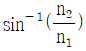
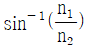
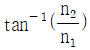
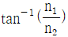
(정답률: 61%)
36. 라디오파와 가시광선의 건물 모서리에 대한 회절현상을 바르게 기술한 것은?
- 라디오파의 파장이 더 길어 더 큰 회절을 보인다.
- 라디오파의 파장이 더 길어 더 작은 회절을 보인다.
- 가시광선의 파장이 더 길어 더 큰 회절을 보인다.
- 가시광선의 파장이 더 길어 더 작은 회절을 보인다.
(정답률: 50%)
37. 폴라로이드 편광판(plastic sheet 형태)의 동작원리에 해당하는 것은?
- 레일리 산란
- 이색성
- 복굴절 효과
- 편광각 효과
(정답률: 44%)
38. 코어의 굴절률이 1.48이고 클래딩의 굴절률이 1.46인 광섬유의 개구수(numerical aperture)는?
- 0.02
- 0.06
- 0.24
- 0.99
(정답률: 47%)
39. 방해석에서 광축에 평행한 방향으로 진행하는 빛에 대한 설명으로 옳은 것은?
- 이상광선과 정상광선의 구별이 없다.
- 이상광선이 정상광선보다 느리게 진행한다.
- 이상광선이 정상광선보다 빠르게 진행한다.
- 이상광선과 정상광선이 분리된다.
(정답률: 36%)
40. 광원의 주파수 선폭이 △ν = 108 Hz 일 때 대략적인 시간 가간섭성 길이(temporal coherence length)는?
- 30cm
- 3m
- 10cm
- 1m
(정답률: 41%)
3과목: 광학계측과 광학평가
41. 태양의 색 온도는 약 5600K 이고 최대 방출 에너지의 파장은 약 500m 이다. 색 온도가 3200K 인 텅스텐 필라멘트에서 최대 에너지를 방출하는 빛의 파장은 얼마인가?
- 50nm
- 286nm
- 875nm
- 4690nm
(정답률: 47%)
42. 카메라의 렌즈에는 무반사 코팅을 하여 피사체로부터 오는 빛의 반사를 막는다. 렌즈의 굴절률이 1.5, 코팅 재료의 굴절률은 1.3일 때, 가시광선의 중간 파장인 550nm에 대해 수직입사 시 무반사 코팅을 하고자 하면 코팅막의 최소 두께는 약 얼마인가?
- 92nm
- 106nm
- 184nm
- 212nm
(정답률: 36%)
43. 다음 그림과 같이 점광원에서 나오는 복사 조도의 비율은 어떻게 변화하는가?
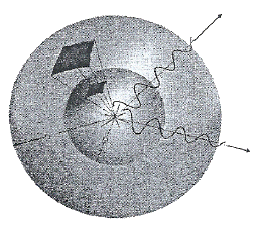
- 거리에 비례한다.
- 거리에 반비례한다.
- 거리의 제곱에 비례한다.
- 거리의 제곱에 반비례한다.
(정답률: 54%)
44. 어떤 사진기의 렌즈 초점거리가 10cm, 구경이 2cm 일 때, 렌즈의 f 값은?
- f/5
- f/8
- f/10
- f/12
(정답률: 63%)
45. 다음 중 원평관된 빛(circular polarized light)을 만드는 방법으로 옳은 것은?
- 선형 편광판을 통과시킨 다음에 사분파장판(quarter wave plate)을 통과시킨다.
- 선형 편광판을 통과시킨 다음에 반파장판(half wave plate)을 통과시킨다.
- 사분파장판을 통과시킨 다음에 선형 편광판을 통과시킨다.
- 반파장판을 통과시킨 다음에 선형 편광판을 통과시킨다.
(정답률: 50%)
46. 가시광에서 유전상수(dielectric constant)가 2.5인 유리의 굴절률은 약 얼마인가?
- 1.46
- 1.5
- 1.54
- 1.58
(정답률: 38%)
47. 레이저를 이용한 길이 측정법 중 가장 먼 거리를 측정할 수 있는 방법은?
- 회절법
- 헤테로다인 간섭법
- 빔(광속)변조법
- 광펄스왕복시간 측정법
(정답률: 49%)
48. 사진기에서 Auto Focusing을 위한 렌즈의 거리 이동에 대한 설명으로 맞는 것은?
- 초점거리가 짧을수록 거리 이동량이 작아진다.
- 초점거리가 짧을수록 거리 이동량이 커진다.
- 광량이 많을수록 거리 이동량이 커진다.
- 광량이 많을수록 거리 이동량이 작아진다.
(정답률: 50%)
49. 다음 중 광학매질이 복굴절성을 이용한 프리즘이 아닌 것은?
- 포로(Porro) 프리즘
- 로촌(Rochon) 프리즘
- 월라스톤(Wollaston) 프리즘
- 글렌-푸코(Clan-Foucault) 프리즘
(정답률: 53%)
50. 가시광선의 파장 범위로 가장 적절한 것은?
- 110nm ~ 250nm
- 380nm ~ 780nm
- 790nm ~ 1⑤0nm
- 1100nm ~ 1300nm
(정답률: 61%)
51. 평면 거울을 각 a 만큼 회전시켰을 때 거울에서 반사되는 빛은 몇 도 회전하는가?
- 0
- √2 a
- a
- 2a
(정답률: 49%)
52. 다음 그림에서 이동거울의 위치가 a지점과 b지점에 있을 경우 검출기에서 빛의 밝기가 가장 어두웠다고 하였을 때, a에서 b까지의 거리가 될 수 없는 것은? (단, 레이저(파장 = 600nm)를 이용한 간섭계이다.)
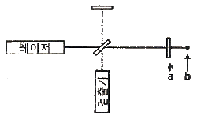
- 600nm
- 750nm
- 900nm
- 1200nm
(정답률: 54%)
53. 현미경에서 대물렌즈의 배율이 Mo 이고, 접안렌즈의 배율이 Me 라면 이 현미경의 배율은?
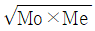
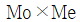
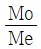
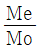
(정답률: 52%)
54. 대물렌즈의 초점거리가 500mm, 접안렌즈의 초점거리가 20mm인 천체 망원경의 배율은 몇 배인가?
- 10배
- 15배
- 25배
- 50배
(정답률: 63%)
55. 현미경의 대물렌즈 경통에 10/0.25 이라고 쓰여 있다. 각각은 무엇을 표시하는가?
- 배율/N,A.
- 조리개 수/배율
- 초점거리/배율
- 배율/초점거리
(정답률: 61%)
56. 망원경의 입사동은 어디에 있는가?
- 대물렌즈
- 접안렌즈
- 대물렌즈의 초점
- 접안렌즈의 초점
(정답률: 52%)
57. 어떤 유리의 굴절률이 ηC = 1.62⑤, ηD = 1.6231, ηF = 1.6294로 주어져 있다. 이 초자의 분산력의 역수(ν)는 약 얼마인가?
- 80
- 75
- 70
- 65
(정답률: 50%)
58. 그림과 같은 렌즈배열에서 첫 번째 렌즈(초점거리 f1)의 후방 초점 거리내에 오목렌즈(초점거리 f2)가 위치한 경우 이 렌즈군은 어떤 광학계로 사용될 수 있는가?
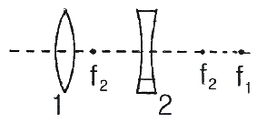
- 망원경
- 현미경
- 분광계
- 간섭계
(정답률: 56%)
59. 광학유리의 굴절률에 관한 일시적 설명으로 맞는 것은?
- 자외선 영역에서 굴절률은 파장이 짧을수록 작다.
- 가시광선 영역에서 굴절률은 파장이 짧을수록 크다.
- 가시광선 영역에서 굴절률은 파장이 짧을수록 작다.
- 적외선 영역에서 굴절률은 파장에 무관하다.
(정답률: 48%)
60. 초점기리 5mm인 접안렌즈와 초점거리 40mm인 대물렌즈로 현미경을 제작하였을 때, 광학경통의 길이가 160mm라면 이 현미경의 배율은 얼마인가?
- 10
- 100
- 200
- 400
(정답률: 49%)
4과목: 레이저 및 광전자
61. He – Ne 레이저의 공진기의 길이가 10cm 일 경우 단일종모드의 간격(선폭)은?
- 1.0 GHz
- 1.5 GHz
- 2.0 GHz
- 2.5 GHz
(정답률: 52%)
62. 석열결정의 Faraday효과를 이용하여 진동면을 45° 회전시키고자 한다. 석영의 베르데 상수는 상온 20℃에서 0.0166(min of arc gauss-1 cm-1)이다. 자기장을 105 gauss 의 세기로 걸어 주었을 때 석영의 두께는 약 얼마인가?
- 1.63cm
- 3.26cm
- 16.3cm
- 32.6cm
(정답률: 57%)
63. 복굴절결정 내에서 빛이 진행할 때 복굴절 결정의 주요 단면(principal section)에 수직인 전기장 벡터를 갖는 광선을 무슨 광선이라 하는가?
- 정상광선
- 이상광선
- s-광선
- p-광선
(정답률: 49%)
64. TEM10 모드 레이저 빔은 Gaussian beam intensify 분포를 가진다. 평면파에 대한 Gaussian 빔의 특징을 올바르게 설명한 것은?
- 빔의 발산각이 크고, 집속 시 집속점의 직경이 작다.
- 빔의 발산각이 작고, 집속 시 집속점의 직경이 크다.
- 빔의 발산각이 작고, 집속 시 집속점의 직경이 작다.
- 빔의 발산각이 크고, 집속 시 집속점의 직경이 크다.
(정답률: 40%)
65. 다음 중 이온 레이저를 대표하며 발진파장이 488nm인 레이저는?
- 아르곤 레이저
- 헬륨-네온 레이저
- 질소 레이저
- 이산화탄소 레이저
(정답률: 43%)
66. 다음 물질 중 광학적으로 Biaxial 성질을 보여주는 것은?
- 수정
- 다이아몬드
- 방해석(Calcite)
- 토파즈(Topaz)
(정답률: 50%)
67. 레이저가 출현하기 전까지 비선형 광학현상을 실험하기 어려웠던 이유로 옳은 것은?
- 결맞음 거리가 짧다.
- 파장을 준단일 파장으로 만들기 힘들다.
- 빛의 세기가 약하다.
- 비선형 결정을 얻기 힘들다.
(정답률: 45%)
68. 다음 중 레이저 발진의 원리와 관계된 현상과 가장 관계가 없는 것은?
- 광 펌핑(optical pumping)
- 밀도 반전(population inversion)
- 유도 방출(stimulated emission)
- 형광(fluorescence)
(정답률: 55%)
69. 렌즈를 사용하여 레이저광에 집속하는 경우 집속된 광속의 직경과 무관한 것은?
- 입사광속의 직경
- 입사광속의 위상
- 입사광속의 파장
- 집속렌즈의 초점거리
(정답률: 40%)
70. 다음 중 레이저와 주요 발진 파장의 연결이 틀린 것은?
- CO2 레이저 : 10.6 μm
- 루비 레이저 : 882 nm
- ArF 엑시머 레이저 : 193 nm
- He-Ne 레이저 : 632.8 nm
(정답률: 35%)
71. 다음 중 Q-스위칭에 사용되지 않는 것은?
- 가포화 색소
- 전기광학 효과
- 자기광학 효과
- 음향광학 효과
(정답률: 54%)
72. 다음 중 광섬유를 사용하는 광통신에 가장 적절한 레이저는?
- Ar+ 레이저
- N2 레이저
- Xe-Cl 레이저
- GaAs 레이저
(정답률: 56%)
73. 파장이 각각 1.06μm, 1.5μm인 레이저 광을 비등방성 결정의 제2차 비선형 효과를 이용하여 합성할 때 합성된 광의 파장은 약 얼마인가?
- 0.96 μm
- 0.84 μm
- 0.62 μm
- 0.42 μm
(정답률: 54%)
74. 다음 중 유기발광다이오드(OLED)의 장점이 아닌 것은?
- 화면에 잔상이 남지 않는다.
- 낮은 전압에서 구동이 가능하다.
- 다른 디스플레이 소자보다 수명이 길다.
- 넓은 시야각과 빠른 응답속도를 갖는다.
(정답률: 45%)
75. 광속 직경이 2mm, 전퍼짐각(full divergence angle)이 △θ인 레이저 광속을 광속확대기를 사용하여 20mm의 직경을 가진 평행한 광속으로 확대하면 이 레이저의 전퍼짐각은 얼마가 되는가?
- △θ/20
- △θ/10
- 10△θ
- 20△θ
(정답률: 54%)
76. 유도방출에 의한 레이저 광의 가간섭거리(coherence length)가 자연방출에 의한 빛의 가간섭거리보다 긴 이유로 옳은 것은?
- 레이저 작동 시 도플러 효과에 의해 선폭이 줄어들기 때문이다.
- 레이저 작동 시 도플러 효과에 의해 선폭이 늘어나기 때문이다.
- 레이저 작동 시 유도방출에 의해 이득이 손실보다 크기 때문에 선폭이 자연선폭보다 줄어든다.
- 레이저 작동 시 유도방출에 의해 이득이 손실보다 작기 때문에 선폭이 자연선폭보다 줄어든다.
(정답률: 40%)
77. 임의의
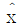
방향으로 편광된 빛을 90도 회전된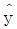
방향으로 편광된 빛으로 바꾸기 위해 사용되는 소자는?- 선형편광기(Linear polarizer)
- 반파장판(Half wave plate)
- 1/4 파장판(Quarter wave plate)
- 편광 빔 스플리터(Polarization beam splitter)
(정답률: 52%)
78. 다음 중 고출력 레이저로서 금속 및 비금속 재료의 가공에 널리 쓰이는 것은?
- Ar+ 레이저
- Ruby 레이저
- CO2 레이저
- He-Cd 레이저
(정답률: 63%)
79. 어떤 기체 레이저의 결맞음 시간(coherence time)이 10-3sec 이라면 결맞음 거리(coherence length)는 얼마인가?
- 1km
- 3km
- 30km
- 300km
(정답률: 45%)
80. N개의 광자가 비선형 결정을 지나면서 제3차 고조파 발생(third-order harmonic generation) 과정을 통하여 파장이 다른 광자로 손실 없이 완전히 변환되었다. 발생한 제3차 고조파의 광자 수는 몇 개인가?
- N/3
- N/2
- N
- 3N
(정답률: 45%)